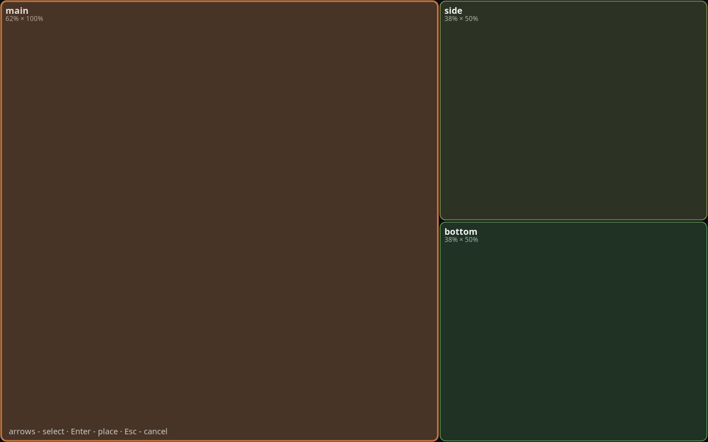

Screenshots



A window grid for Cinnamon: draw your own zones, then put windows into them with a key.
_NET_FRAME_EXTENTS) through muffin's EWMH messages.zones.conf ([rules]), windows you carried out stay out, and a freed zone can grow into its neighbour.Super+Z — an overlay with your zones, arrows to move the selection, Enter to place the window, Esc to cancel.theme.conf paints the editor, the picker, the HUD and the tab strip; the editor samples your wallpaper for the palette and can generate matching GTK window controls. Window borders stay as Cinnamon draws them: Muffin does not read border themes.

Two independent paths: from the repository, for yourself, or as a package. Both install the same code; nothing beyond python3, PyGObject and libX11 is required.
From the repository:
./install-launcher.sh # launcher in the menu + icons
./install-launcher.sh --desktop # also a shortcut on the desktop
./install-daemon.sh # autostart the auto-tiling daemon
python3 setup-hotkeys.py # keybindings in CinnamonAs a package (a .deb for Debian/Ubuntu, an AUR recipe for Arch, a .tar.gz for any system):
make tarball # dist/gridsnap-<version>.tar.gz
make deb # dist/gridsnap_<version>_all.deb
make aur # AUR recipe in dist/PKGBUILD
sudo apt install ./dist/gridsnap_<version>_all.debThe full instructions, the config format and every command are in the documentation.
man gridsnap (the commands, zones.conf, files, exit codes),
man gridsnap-tiler, man gridsnap-daemon, man gridsnap-editor,
man gridsnap-picker, man gridsnap-ctl, man setup-hotkeys.